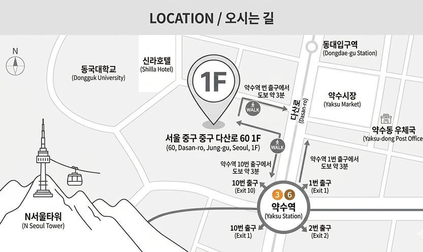
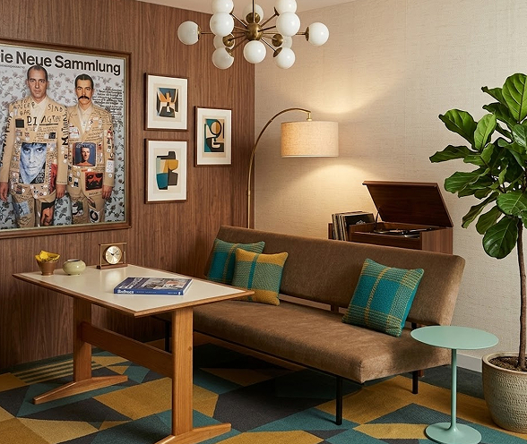

약수역 1번 또는 10번 출구에서 다산로 방향으로 약 200m 직진하시면 우측 1층에 위치해 있습니다. (도보 약 3분 소요)
지하철 3호선 및 6호선 약수역에서 하차 후 1번 출구로 나오시면 가장 빠르게 방문하실 수 있습니다.
네비게이션에 '다산로 60'을 검색해 오세요. 건물 전면 주차 공간이 협소할 수 있으니 도착 전 고객센터로 문의 부탁드립니다.(2시간 주차권 발행)